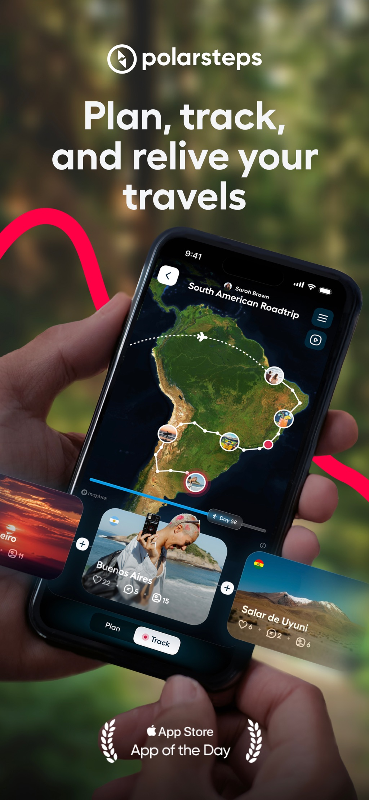
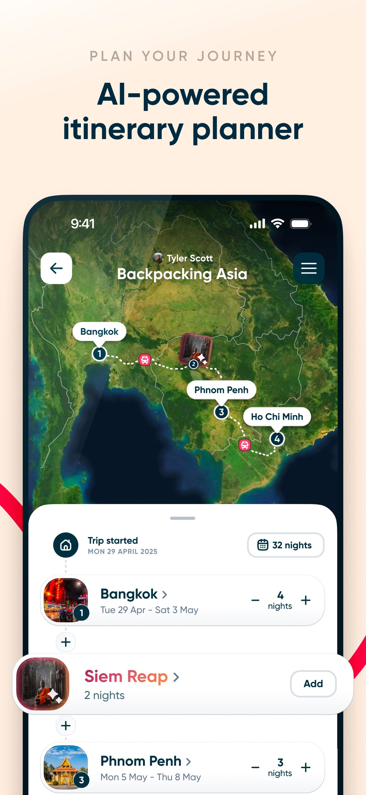
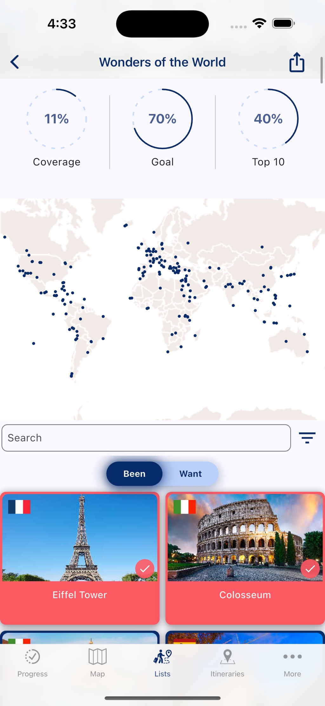
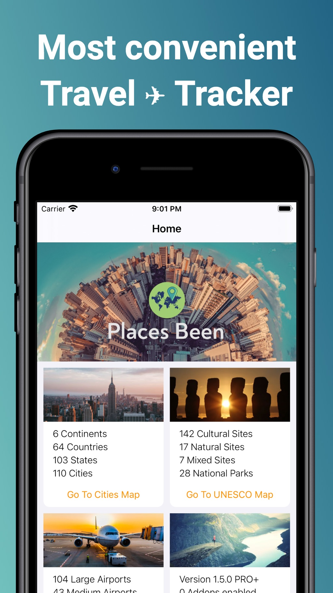

全部为 CSS 画的示意图 · 非真机渲染
Direction A
地图当顶 · 笔记流当身
骨架抄 Polarsteps（地图＋底部卡），但底下那一排换成
笔记
——我们卖的是内容，不是轨迹
参考：Polarsteps 首页
（App Store 真截图）


读到的：全屏卫星图当背景／针＝圆形照片／底部一张大地点卡横滑／Day 58 时间轴／Plan·Track 两枚药丸
9:41
●●● ⌁ ▮
Today · Kyoto
Notes near today
Fushimi Inari Taisha · Apr 3
三千座鸟居的登山道，走到第四段才没人
山门 06:40 起开放；上山道两侧每百步一座朱红鸟居，光线在 07:30 前最好……
3 photos · 1,240 words · from camera
Nishiki Market · Apr 2
三条巷子的食材地图：哪家带得走
5 photos · link import
Feed
Map
Check in
Search
Me
首页。
地图只占 1/3，作用是"今天在哪"；主体仍是左色块右文的笔记卡（沿用图麦的母题）。底部中央那枚黄色
Check in
是唯一高饱和动作。
9:41
●●● ⌁
Check in here?
Fushimi Inari Taisha, Uji-ward, Kyoto
±12 m · precise location on
Use this place
Pick on map instead
Location is saved on this device only · Not in any backup you don't export
打卡抽屉。
这一屏就是任务单 T3 那四态要走的屏：
拒权限
时"Use this place"变灰、"Pick on map"升为主按钮；
精确关闭
那一档，±12 m 那行要换成城市级说法。
这一方向的代价与好处
：地图页与首页合一，少一屏；但笔记流被地图压掉 1/3 高度，长文用户会嫌挤。Polarsteps 用"底部大卡横滑"解决，我们如果照搬，卡片高度要重新定尺。
全部为 CSS 画的示意图 · 非真机渲染
Direction B
地点分组账本 · 地图退到二级
首页直接回答"我在哪些地方存过东西"，把自动分组摆在最上层——这是你拍板那一格（只读虚拟分组）最直的译法
参考：Visited 首页／Places Been 首页
（App Store 真截图）


读到的：Visited＝环形统计＋点位世界图＋Been/Want 药丸＋双列卡；Places Been＝首页干脆是统计卡片墙，地图在二级页
9:41
●●● ⌁
38
notes
12
places
4
countries
By place
By my folders
Fushimi Inari Taisha
Apr 1–3 · 3
三千座鸟居的登山道
Apr 3 · 1,240 words · 3 photos
山门口的御朱印排队时间
Apr 2 · 240 words
Nishiki Market
Apr 2 · 2
三条巷子的食材地图：哪家带得走
Apr 2 · 5 photos · link import
Arashiyama Bamboo Grove
Apr 1 · 2
竹林道口几点没人：两个时间窗
Apr 1 · 2 photos · from screenshot
9 more places · scroll
Places
Map
Check in
Search
Me
首页。
顶部三枚计数是这一族公认的"炫耀位"（Visited 用环、Places Been 用卡墙）。
By place / By my folders
那两枚就是拍板那一格的落地：地点分组是只读视图，不写进手建分类。
9:41
●●● ⌁
Kyoto · 4 notes
三千座鸟居的登山道，走到第四段才没人
山门 06:40 起开放；上山道两侧每百步一座朱红鸟居……
Apr 3 · 1,240 words
Tap a dot for its notes · long-press to move it
Places
Map
Check in
Search
Me
二级地图页。
浅色点位底图（Visited 那一族的画法，
不是真地图渲染
）。这一屏要等任务单 T1/T2 量完才敢定：偏移与反查读数没回来之前，这里不放"精确针＋地址"。
这一方向的代价与好处
：笔记最多、最像"我自己的东西"，且完全绕开地图渲染风险；坏处是第一眼不炫，截图发不出去——所以它必须配一个"足迹墙"当分享产物（见方向 C 那一屏）。
全部为 CSS 画的示意图 · 非真机渲染
Direction C
足迹墙优先 · 单地点时间线
把"可炫耀"提到第一屏：一面格子墙当首页，点进去是一个地点的时间线
参考：Visited 的统计环与双列卡
Places Been 的计数卡墙
读到的：这一族的分享欲来自"覆盖率"与"点亮的格子"，不是来自正文——所以 C 把笔记退到二级
9:41
●●● ⌁
Your places
12 of 190 lit · 4 countries
Fushimi Inari Taisha · 3 notes
Apr 1 – 3 · latest: 三千座鸟居的登山道
1,240 words · 3 photos · ±12 m
Nishiki Market · 2 notes
Apr 2 · 三条巷子的食材地图
Arashiyama · 2 notes
Apr 1 · 竹林道口的两个时间窗
178 places still grey · this week +3
Wall
Feed
Check in
Search
Me
首页＝格子墙。
刻意不用真地图（偏移与合规都没量）：一面墙、去过的格子高饱和点亮。这一屏也是将来"年度报告"那张导出图的底。
9:41
●●● ⌁
Fushimi Inari Taisha
Uji-ward, Kyoto · 3 notes · Apr 1–3
photo slot 示意
Apr 3 · 07:42
±12 m
三千座鸟居的登山道，走到第四段才没人
山门 06:40 起开放……
Apr 2 · 18:05
manual pin
山门口的御朱印排队时间
Apr 1 · 09:20
±12 m
到站第一件事：把 JR 票留好
Add note here
Wall
Feed
Check in
Search
Me
单地点时间线。
一个地点下的多篇按时间竖排，每条标
取位来源
（±12 m ＝现场定位／manual pin ＝手动点针）——这两个词就是拍板"两条腿"在屏上的样子。
这一方向的代价与好处
：最好卖、最好截图外传，格子墙天然就是分享物；坏处是它离"笔记工具"最远——正文与导入那套核心能力在这条路上会被压成二级。
格子墙不需要真地图，所以它也是三个方向里唯一不被 T1/T2 卡住的一屏。